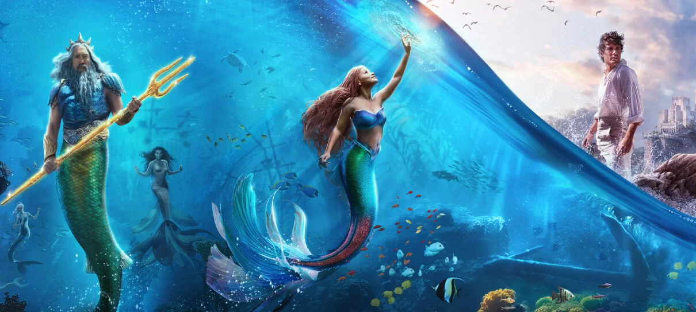

Alurabook
Live action da pequena sereia
Na história, acompanhamos a jornada da sereia Ariel, que sonha em descobrir o que tem além do mar. A protagonista quer descobrir mais sobre a terra firme e, ao visitar a superfície, se apaixona pelo elegante Príncipe Eric. Embora as sereias sejam proibidas de interagir com os humanos, Ariel deve seguir seu coração e, para isso, ela faz um acordo com a malvada bruxa do mar, Úrsula, que lhe dá a chance de trocar sua calda por pernas humanas, mas acaba colocando sua vida, e a coroa de seu pai, em perigo.
